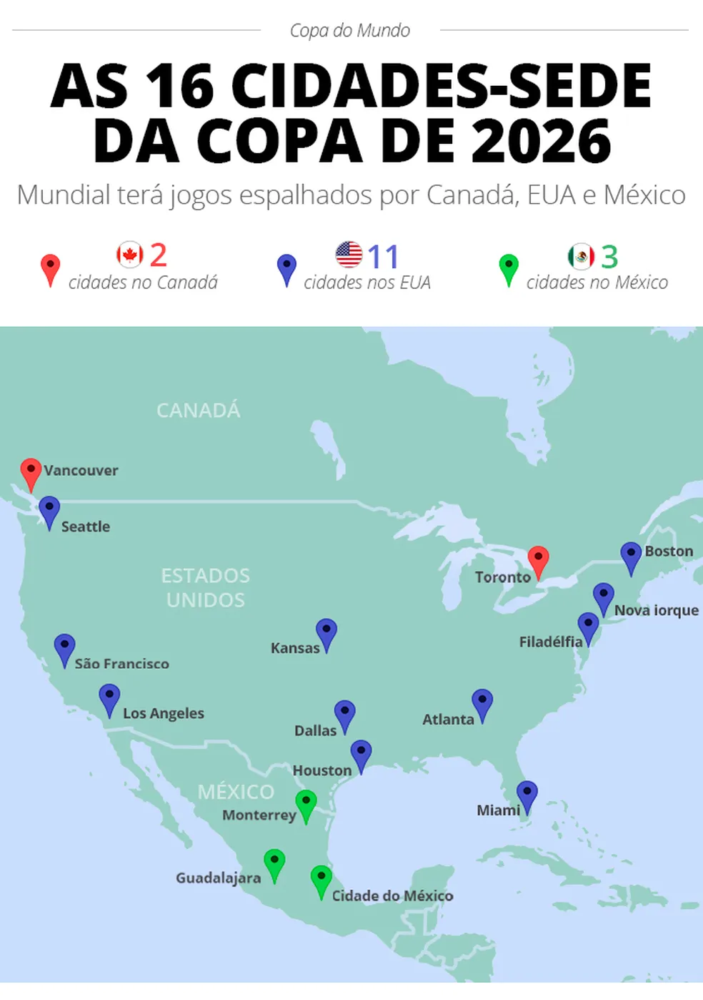

A Copa de 2026 foi foi disputada em 16 cidades de três países diferentes.
Todos os jogos a partir das quartas de final foram disputados nos Estados
Unidos
o Estádio Azteca, na Cidade do México, recebeu a partida de abertura em
11 de junho

A grande final foi disputada em 19 de julho de 2026, no MetLife
Stadium
, em East Rutherford, Nova Jersey.
Pela primeira vez na história, a final da Copa teve um show no intervalo.
Voltar ao topo